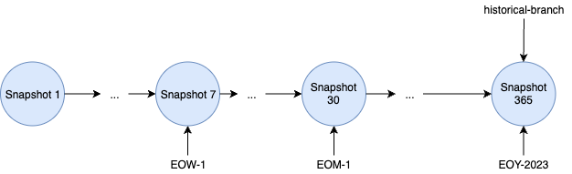
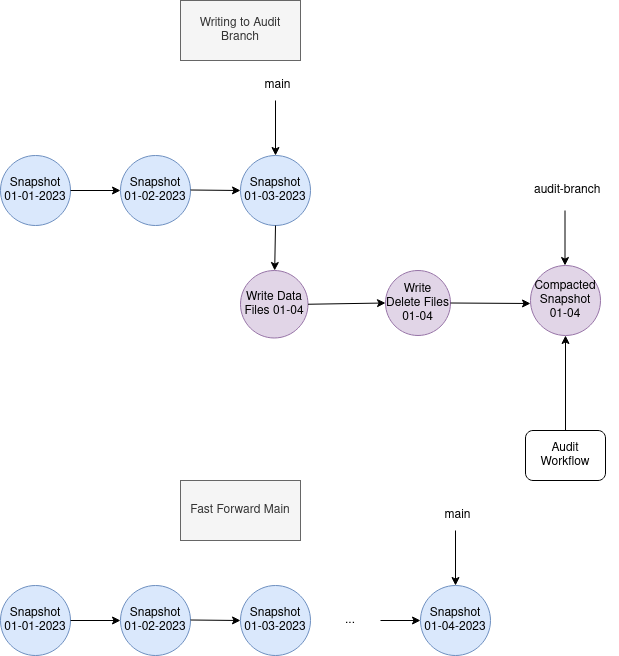

Branching and Tagging
Overview
Iceberg table metadata maintains a log of snapshots which represent the changes applied to a table.
Snapshots are fundamental in Iceberg as they are the basis for reader isolation and time travel queries.
For controlling metadata size and storage costs, Iceberg provides snapshot lifecycle management procedures such as expire_snapshots for removing unused snapshots and no longer neccessary data files based on table snapshot retention properties.
For more sophisticated snapshot lifecycle management, Iceberg supports branches and tags which are named references to snapshots with their own independent lifecycles. This lifecycle is controlled by branch and tag level retention policies. Branches are independent lineages of snapshots and point to the head of the lineage. Branches and tags have a maximum reference age property which control when the reference to the snapshot itself should be expired. Branches have retention properties which define the minimum number of snapshots to retain on a branch as well as the maximum age of individual snapshots to retain on the branch. These properties are used when the expireSnapshots procedure is run. For details on the algorithm for expireSnapshots, refer to the spec.
Use Cases
Branching and tagging can be used for handling GDPR requirements and retaining important historical snapshots for auditing. Branches can also be used as part of data engineering workflows, for enabling experimental branches for testing and validating new jobs. See below for some examples of how branching and tagging can facilitate these use cases.
Historical Tags
Tags can be used for retaining important historical snapshots for auditing purposes.

The above diagram demonstrates retaininig important historical snapshot with the following retention policy, defined via Spark SQL.
-
Retain 1 snapshot per week for 1 month. This can be achieved by tagging the weekly snapshot and setting the tag retention to be a month. snapshots will be kept, and the branch reference itself will be retained for 1 week.
-
Retain 1 snapshot per month for 6 months. This can be achieved by tagging the monthly snapshot and setting the tag retention to be 6 months.
-
Retain 1 snapshot per year forever. This can be achieved by tagging the annual snapshot. The default retention for branches and tags is forever.
-
Create a temporary "test-branch" which is retained for 7 days and the latest 2 snapshots on the branch are retained.
Audit Branch

The above diagram shows an example of using an audit branch for validating a write workflow.
- First ensure
write.wap.enabledis set. - Create
audit-branchstarting from snapshot 3, which will be written to and retained for 1 week. - Writes are performed on a separate
audit-branchindependent from the main table history. - A validation workflow can validate (e.g. data quality) the state of
audit-branch. - After validation, the main branch can be
fastForwardto the head ofaudit-branchto update the main table state. - The branch reference will be removed when
expireSnapshotsis run 1 week later.
Usage
Creating, querying and writing to branches and tags are supported in the Iceberg Java library, and in Spark and Flink engine integrations.